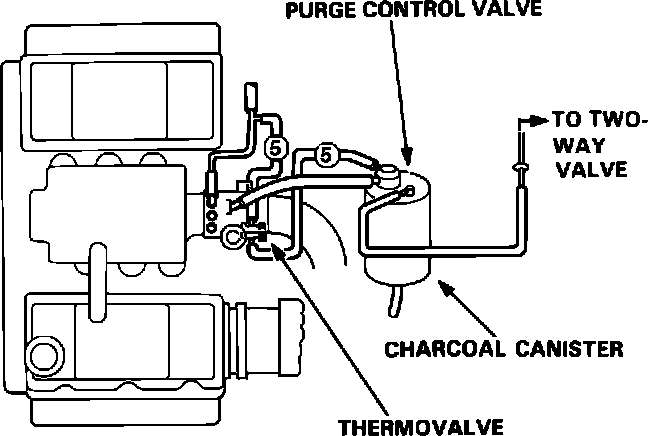
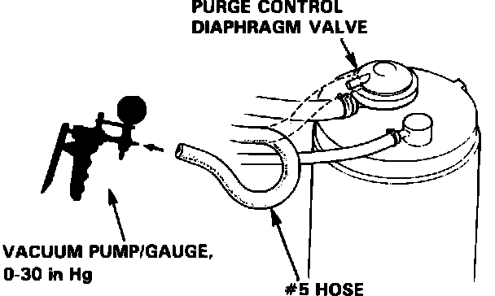
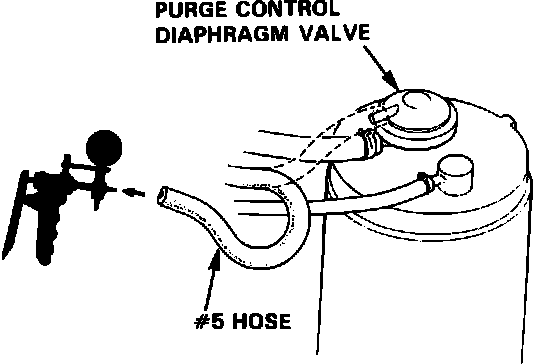
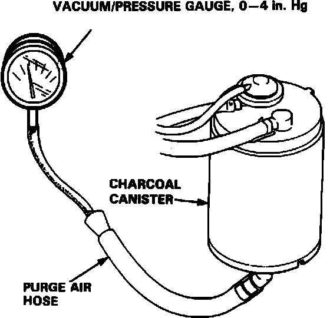
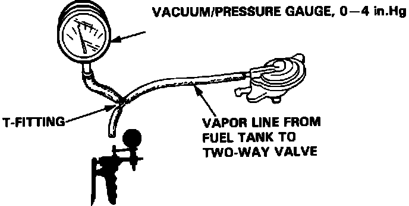
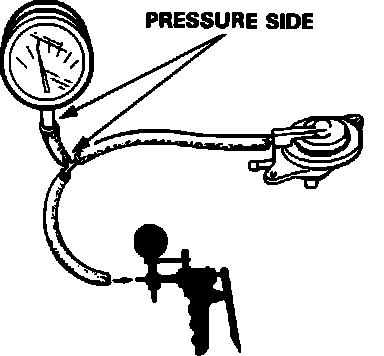

Evaporative Emissions System: Testing and Inspection
COLD ENGINE TEST
1. Check the vacuum lines for proper connections, cracks, blockage, or disconnected hoses.
Fig. 38 (EVAP) Test Components:

2. Disconnect the #5 hose at the purge control diaphragm valve (on the charcoal cannister) and connect a vacuum gauge to the hose.
Fig. 39 Purge Control Diaphragm Valve Test:

3. Start the engine and let it idle.
NOTE:
Engine coolant temperature must be below 70°C (158°F).
4. Vacuum should not be available.
5. If there is vacuum, replace the thermovalve and retest.
HOT ENGINE TEST
Fig. 40 Purge Control Test Vacuum Hookup:

1. Disconnect the #5 hose at the purge control diaphragm valve (on the charcoal canister) and connect a vacuum gauge to the hose.
2. Start and warm up the engine to normal operating temperature (cooling fan comes on).
3. There should be vacuum at idle, once the engine is warm.
4. If there is no vacuum, replace the thermovalve and retest.
5. Disconnect the vacuum gauge and reconnect the hose.
6. Remove the fuel filler cap.
Fig. 41 Purge Control Pressure Test:

7. Remove the canister purge air hose from the frame and connect the hose to a vacuum gauge as shown.
8. Raise the engine speed to 3,500 rpm. Vacuum should appear on the vacuum gauge within 1 minute.
a. If vacuum appears on the gauge within 1 minute, remove gauge, test is complete.
b. If no vacuum, replace the canister and retest.
TWO-WAY VALVE TEST
1. Remove the fuel filler cap.
2. Remove the vapor line from the fuel tank and connect it to a T-fitting from a vacuum gauge and vacuum pump as shown.
Fig. 42 Two Way Valve Test Vacuum Hookup:

3. Slowly apply vacuum while watching the gauge.
a. Vacuum should stabilize momentarily at 5 to 15 mmHg (0.2 to 0.6 in.Hg).
b. If vacuum stabilizes (valve opens) below 5 mmHg (0.2 in.Hg) or above 15 mmHg (0.6 in.Hg), install a new valve and retest.
4. Move the vacuum pump hose from vacuum to the pressure side of the pump, and move the vacuum gauge hose to the pressure side as shown.
Fig. 43 Two Way Valve Test Pressure Hookup:

5. Slowly pressurize the vapor line while watching the gauge. Pressure should stabilize at 25 to 55 mmHg (1.0 to 2.2 in.Hg).
a. If pressure momentarily stabilizes (valve opens) at 25 to 55 mmHg (1.0 to 2.2 in.Hg), the valve is OK.
b. If the pressure stabilizes below 25 mmHg (1.0 in.Hg) or above 55 mmHg (2.2 in.Hg), install a new valve and retest.